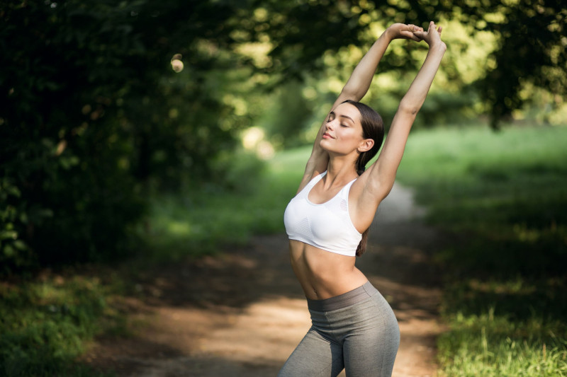

Esportes de verão
Com a chegada da tão sonhada e aguardada estação, muitos adeptos dos esportes ao ar livre começam a dar as caras. Sejam em praias, praças ou parques, sempre veremos aqueles que gostam de se exercitar expostos ao tempo.
Não se importando com o horário da atividade, muitos saem não somente para manter a forma, mas também para estreitar seus laços sociais. Criando novas amizades, reforçando as antigas, e até dando início a novos vínculos afetivos.
